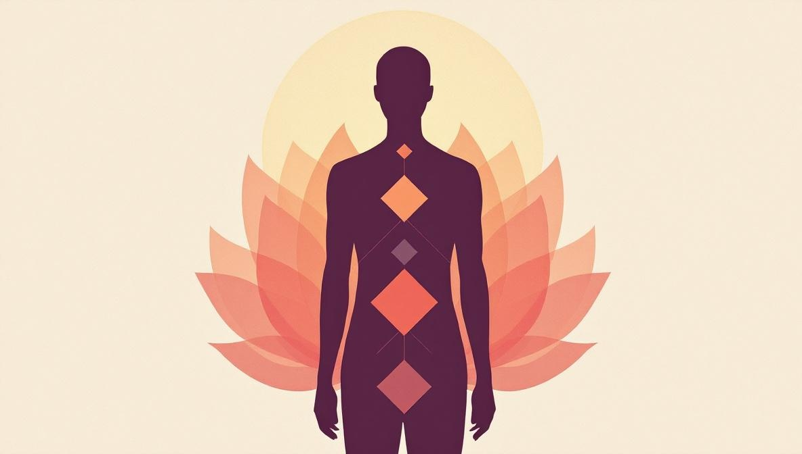
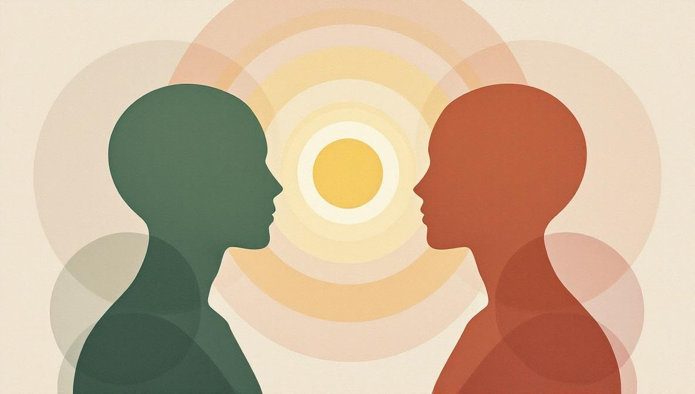

Cosa significa «Tipo» in Human Design
Il Tipo è l'etichetta più ampia di una carta — la singola parola che classifica il tuo bodygraph in uno dei cinque schemi energetici. È determinato da quali dei nove centri sono definiti e da come si collegano alla Gola. Il generatore della carta lo calcola in automatico; non devi contare nulla a mano.
Ogni Tipo arriva con un pacchetto fisso: un nome, una Strategia (come relazionarsi con la vita), una qualità dell'aura (come il sistema dice che il tuo campo energetico interagisce con gli altri), un'emozione caratteristica (il sentire che segnala l'allineamento) e un tema del non-sé (il sentire che segnala il contrario). La Strategia e la firma sono i due pezzi che vale di più memorizzare il primo giorno.
Due inquadrature oneste prima di proseguire. Prima: le percentuali qui sotto vengono dalla letteratura interna al Human Design, non da uno studio demografico pubblicato. Considerale approssimative. Seconda: il Tipo non è una personalità. Due Generator possono essere persone molto diverse; ciò che condividono è la meccanica energetica sottostante che il sistema descrive.
I cinque tipi a colpo d'occhio
| Tipo | Popolazione | Strategia | Firma / Non-sé |
|---|---|---|---|
| Manifestor | ~9% | Informare prima di agire | Pace / Rabbia |
| Generator | ~37% | Attendere e rispondere | Soddisfazione / Frustrazione |
| Manifesting Generator | ~33% | Rispondere, poi informare | Soddisfazione e Pace / Frustrazione e Rabbia |
| Projector | ~20% | Attendere l'invito | Successo / Amarezza |
| Reflector | ~1% | Attendere un ciclo lunare (~28 giorni) per le scelte importanti | Sorpresa / Delusione |
Il resto di questa guida è una sezione per ogni Tipo — com'è fatta la carta, come funziona davvero la Strategia nella vita quotidiana, e i modi più comuni in cui il Tipo viene letto male.

1. Manifestor (~9%)
I Manifestor hanno almeno uno dei centri motori (Cuore, Plesso Solare o Radice) collegato alla Gola, ma il Sacrale non è definito. La firma sulla carta è un anello energetico chiuso che corre da un motore direttamente all'espressione. In pratica, i Manifestor sono progettati per iniziare le cose — per dare il via, per immettere movimento nuovo nel mondo senza bisogno di permesso o di un input esterno.
Strategia: informare prima di agire. I Manifestor non devono chiedere permesso, ma devono informare chi sarà toccato dalla loro azione. La Strategia non è cortesia burocratica — esiste perché l'aura del Manifestor è descritta come chiusa e respingente, e chi sta attorno tende a sentirsi colto di sorpresa quando il Manifestor si muove. Informare chiude quello scarto. In pratica: dillo al partner prima di accettare il nuovo lavoro, dillo al team prima di cambiare il piano, dillo a chi vive con te prima di invitare amici.
Emozione caratteristica: pace. Non-sé: rabbia. I Manifestor che non informano incontrano resistenza — opposizione, conflitti, iniziative bloccate — e la versione del Plesso Solare di quella resistenza esce come rabbia. Quando la Strategia funziona, il vissuto è una sorta di pace pulita e stabile, anche quando il Manifestor si muove in fretta.
Errore di lettura comune. Ai Manifestor a volte viene detto che sono «leader naturali» che non hanno bisogno di nessuno. Il sistema dice in realtà il contrario: i Manifestor sono progettati per iniziare e per informare, e soffrono quando salta la seconda metà. L'obiettivo è un'azione indipendente e trasparente — non l'isolamento.
2. Generator (~37%)
I Generator hanno il Sacrale definito senza una connessione motore-Gola che lo bypassi. Il Sacrale è il motore vitale della carta — energia sostenibile e rinnovabile che alimenta una vita lavorativa lunga, quando viene usata sulle cose giuste. I Generator sono il gruppo più numeroso nella popolazione descritta dal sistema; a volte vengono chiamati «la forza lavoro» del Human Design, accurato ma piatto. L'affermazione più profonda è che i Generator sono progettati per trovare un lavoro davvero soddisfacente, e costruirci dentro la maestria.
Strategia: attendere e rispondere. I Generator non sono progettati per iniziare da fermi. Sono progettati per rispondere — alla domanda, all'offerta, alla situazione, alla risposta di pancia del corpo. Il Sacrale comunica con suoni pre-verbali (il celebre «uh-huh» per sì, «unh-unh» per no) prima che la mente costruisca un argomento. La Strategia è rallentare abbastanza da notare quel segnale e agire di conseguenza.
Firma: soddisfazione. Non-sé: frustrazione. Un Generator che gira sul lavoro sbagliato, sulle relazioni sbagliate o sull'iniziativa forzata si frustra — frustrazione ripetuta, di basso grado, di fine giornata, che si accumula negli anni. Il Generator che usa il Sacrale in modo corretto si sente stanco in modo buono a fine giornata, con una soddisfazione di fondo costante anche nei giorni difficili.
Errore di lettura comune. «Attendere e rispondere» viene spesso interpretato come «aspettare passivi che la vita ti capiti addosso». Non è quello che dice il sistema. I Generator possono curare il campo delle cose a cui rispondere — rendendosi visibili, andando agli eventi, mettendosi davanti alle occasioni. L'attesa riguarda il segnale del Sacrale una volta che lo stimolo è davanti a te, non lo stimolo stesso.
3. Manifesting Generator (~33%)
I Manifesting Generator (spesso abbreviati MG) hanno il Sacrale definito più una connessione motore-Gola. Non sono Manifestor più Generator sovrapposti; sono un Tipo distinto con la propria meccanica. Il Sacrale definito dà loro forza vitale sostenibile; la connessione motore-Gola dà loro un output espressivo diretto, che li rende più veloci e più multi-traccia dei Generator puri.
Strategia: rispondere, poi informare. Prima viene la metà Generator — attendere il segnale Sacrale in risposta a uno stimolo. Una volta che il corpo ha detto sì, la connessione motore-Gola entra in gioco: l'MG si muove in fretta, spesso salta passaggi, combina percorsi in modi inattesi. La parte «informare» è presa in prestito dalla logica del Manifestor e funziona allo stesso modo: avvisa le persone toccate prima di cambiare direzione, di passare a un altro progetto, o di fermare qualcosa a metà.
Firma: soddisfazione e pace. Non-sé: frustrazione e rabbia. Gli MG portano entrambe le tonalità, Generator e Manifestor. Fuori allineamento, sentono la frustrazione di base del Generator che usa male il Sacrale più il picco di rabbia quando saltano la fase di «informare». In allineamento, il vissuto è impegnato, multi-traccia, soddisfacente — e chi sta attorno non viene colto di sorpresa dai continui cambi di velocità.
Errore di lettura comune. Agli MG viene spesso detto che sono «destinati a fare molte cose insieme» come se il multitasking fosse l'obiettivo. L'obiettivo è rispondere in pieno — a volte significa vari progetti in parallelo, a volte un solo progetto in profondità. La meccanica non impone l'ampiezza; la consente quando la risposta è autentica.
4. Projector (~20%)
I Projector non hanno il Sacrale definito e non hanno una connessione motore-Gola. Sono Tipi non-energetici, il che non significa «poca energia» — significa che il Sacrale non è la loro fonte di potenza. I Projector funzionano con energia presa in prestito, assorbendo e amplificando quella di chi sta loro intorno attraverso un'aura descritta come focalizzata e penetrante. Il loro dono è descritto come riconoscere e guidare gli altri — vedere come l'energia di qualcun altro può essere usata meglio.
Strategia: attendere l'invito. I Projector sono progettati per essere riconosciuti e invitati — in ruoli, conversazioni, collaborazioni, occasioni. Dare consigli non richiesti, o spingere in spazi che non si sono aperti, tende a prosciugarli e a incontrare resistenza. L'attesa non è passività infinita: è più simile al restare visibili e in formazione finché arriva l'invito giusto, poi accoglierlo con pulizia.
Firma: successo. Non-sé: amarezza. L'amarezza in un Projector di solito significa: «Sto lavorando tanto, dando il mio miglior consiglio, e nessuno mi riconosce». È il costo percepito dello spingere. Quando un Projector attende l'invito giusto e lavora al suo interno, il successo — riconoscimento autentico e risultati significativi, non necessariamente fama — tende ad arrivare. La Strategia implica anche che non ogni invito è quello giusto; l'Autorità filtra.
Errore di lettura comune. Ai Projector viene a volte detto che sono «pigri» rispetto ai Generator perché non sostengono lo stesso ritmo da quarant'ore settimanali. Il sistema lo legge diversamente: i Projector sono progettati per lavorare in raffiche più brevi e focalizzate e per recuperare. La meccanica non-energetica non è un difetto; è una diversa modalità operativa che richiede diversi schemi di riposo per essere produttiva nel tempo.

5. Reflector (~1%)
I Reflector hanno tutti i nove centri indefiniti. La carta è quasi completamente bianca. Sono il Tipo più raro di gran lunga e l'unico non guidato da un motore o dal Sacrale definito. La loro aura è descritta come resistente e campionante — assorbono tutto ciò che hanno intorno e lo riflettono, ed è anche per questo che sono profondamente influenzati dal luogo e dalle persone con cui passano il tempo.
Strategia: attendere un ciclo lunare per le scelte importanti. Poiché i Reflector non hanno un'autorità interna fissa, sono progettati per lasciare che le grandi decisioni attraversino un intero ciclo lunare — circa 28 giorni — prima di impegnarsi. Nel corso di un mese campionano molti stati diversi; ciò che resta alla fine è più vicino a una posizione stabile e ragionata. Per le scelte quotidiane il ciclo è più breve, ma il principio resta: non bloccare impegni importanti sulla chiarezza di un singolo momento.
Firma: sorpresa. Non-sé: delusione. Un Reflector che attende davvero tende a essere autenticamente sorpreso da ciò che vede emergere, in sé e attorno a sé. La delusione del non-sé compare quando il Reflector forza una decisione prima che il ciclo abbia fatto il suo lavoro, o quando resta in un ambiente che non lo nutre. L'ambiente conta in modo insolito per i Reflector — il luogo e le persone attorno modellano l'esperienza interna più che per ogni altro Tipo.
Errore di lettura comune. Ai Reflector viene a volte detto che sono «specchi» senza un sé proprio. È un errore. Un Reflector ha un sé stabile che è esattamente la coerenza con cui sperimenta nel tempo un input incoerente. La metafora dello specchio descrive l'aura, non la persona.
Come interagiscono i tipi
Il Tipo conta nelle relazioni, nel lavoro e nella genitorialità perché ogni Tipo ha un'aura, e le aure si influenzano in modi prevedibili. Alcune osservazioni pratiche dalla letteratura e dai lettori in attività:
- Generator e MG attorno ai Projector. Un Projector con un partner Generator spesso prende in prestito l'energia del Sacrale e può sovraccaricarsi senza accorgersene. I periodi di riposo previsti contano.
- Genitori Manifestor. I bambini Manifestor in particolare traggono beneficio dall'essere informati anziché comandati — ma lo stesso schema aiuta gli adulti Manifestor in qualsiasi relazione stretta.
- Reflector e ambiente. Per un Reflector dove vive e dove lavora pesa più che per altri Tipi; un ambiente teso si presenta direttamente nello stato interno.
- Due Generator in una relazione. Due Sacrali insieme creano quello che alcuni lettori chiamano un «match di frequenza» — entrambi i corpi devono davvero rispondere, altrimenti il risentimento cresce anche quando in superficie nulla sembra storto.
Niente di tutto questo è deterministico. La carta descrive una meccanica che il sistema afferma essere all'opera; le persone, le scelte e la cultura fanno il resto.
Cosa fare davvero una volta che conosci il tuo tipo
L'errore più comune dei lettori alle prime armi è trattare il Tipo come un'etichetta da indossare e fermarsi lì. L'approccio più utile è più simile a un piccolo esperimento da condurre per qualche mese.
- Scegli un'area decisionale. Il lavoro, una relazione, una scelta ricorrente che continui a sbagliare. Applica la tua Strategia solo in quell'area — informare se sei un Manifestor, rispondere se sei un Generator o MG, attendere inviti se sei un Projector, prendere il ciclo lunare per la prossima decisione importante se sei un Reflector.
- Tieni d'occhio la firma, non i risultati. L'affermazione del sistema è interna: pace, soddisfazione, successo, sorpresa. Gli esiti esterni sono rumorosi e lenti. La firma si manifesta prima e in modo più affidabile.
- Abbina il Tipo all'Autorità. La Strategia dice come relazionarsi; l'Autorità dice come capire se uno specifico sì è davvero tuo. La maggior parte delle carte ha una delle sette Autorità (emozionale, sacrale, splenica, ego, sé proiettato, mentale, lunare). Le due insieme fanno gran parte del lavoro pratico.
- Concediti tre mesi. Una settimana è troppo poco per vedere altro che la novità. Tre mesi bastano perché alcune decisioni mostrino esiti, perché lo schema del non-sé compaia chiaro quando ignori la Strategia, e perché tu decida se il quadro si sta guadagnando il suo posto.
Cosa il Tipo non fa
Un ultimo passaggio onesto. Il Tipo Human Design non è un oroscopo e non è uno strumento clinico. Non prevede il futuro, non diagnostica condizioni, non sostituisce le cure mediche, psicologiche o psichiatriche. Un praticante che usa il Tipo per etichettare tuo figlio come «difficile» o per dirti di lasciare una relazione non sta leggendo il sistema per come è stato pensato. Il framework è costruito per l'auto-osservazione, non per pronunciare verdetti sugli altri.
Usato bene, il Tipo riduce la domanda a qualcosa di pratico: «Dato come sono progettato per relazionarmi, questa scelta è allineata?». È una domanda piccola e utile. Non deve fare di più per valere la pena.
Vuoi una lettura personale di Human Design?
Holistic Unity ti connette con analisti Human Design verificati — in inglese, italiano e portoghese, online o in presenza. Sfoglia i profili, leggi la formazione di ciascun lettore e prenota direttamente.
Trova un analista Human DesignFonti e riferimenti
- Jovian Archive — l'organizzazione ufficiale del Human Design fondata da Ra Uru Hu, custode dei materiali didattici originali e del software Rave Chart, e fonte dei nomi canonici dei Tipi, delle Strategie e delle firme: jovianarchive.com.
- International Human Design School (IHDS) — l'ente di certificazione per analisti e insegnanti professionisti di Human Design, fondato da Ra Uru Hu e tuttora il principale percorso di formazione professionale a livello mondiale: ihdschool.com.
- MyBodyGraph — generatore di carte ufficiale e gratuito costruito sui dati Jovian Archive; il posto più pulito per verificare il tuo Tipo, Strategia e Autorità prima di leggere oltre: mybodygraph.com.
- Genetic Matrix — piattaforma alternativa per la generazione di carte molto usata da lettori e insegnanti professionisti, utile per verificare le assegnazioni di Tipo a orari di nascita borderline: geneticmatrix.com.
- Conferenze fondative — la fonte primaria più affidabile per le definizioni dei Tipi, le Strategie e le emozioni caratteristiche resta il corpus di insegnamenti registrati di Ra Uru Hu, archiviato presso Jovian Archive. Le divulgazioni secondarie variano molto in fedeltà; verifica ogni affermazione forte su un Tipo confrontandola con la fonte ufficiale.
Domande frequenti
Quanti tipi di Human Design esistono?
Esistono cinque tipi di Human Design: Manifestor (circa il 9% delle persone), Generator (circa il 37%), Manifesting Generator (circa il 33%), Projector (circa il 20%) e Reflector (circa l'1%). Alcuni insegnanti contano Generator e Manifesting Generator come un unico Tipo con due sotto-modalità, il che porterebbe a quattro Tipi. Entrambe le inquadrature compaiono nella letteratura ufficiale.
Come scopro il mio tipo di Human Design?
Servono la data di nascita esatta, l'ora esatta (al minuto) e la città di nascita. Inseriscile in un generatore gratuito — il sito ufficiale Jovian Archive, MyBodyGraph o Genetic Matrix sono i più consolidati. Il Tipo è la prima etichetta stampata sulla carta. L'ora conta: in alcuni casi quindici minuti di differenza possono spostarti su un altro Tipo.
Qual è il tipo di Human Design più raro?
Il Reflector è il più raro, intorno all'1% della popolazione. I Reflector hanno tutti i nove centri indefiniti, quindi riflettono e amplificano l'energia di chi e di ciò che hanno intorno. La loro strategia decisionale è anche la più lenta delle cinque — un intero ciclo lunare, circa 28 giorni, per le scelte importanti.
Posso essere più di un tipo di Human Design?
No. Ogni carta è esattamente un Tipo. Il Manifesting Generator sembra un ibrido di Manifestor e Generator, ma è un Tipo distinto con la propria Strategia, non una combinazione. L'equivoco nasce di solito perché chi inizia legge il nome alla lettera invece di leggere le definizioni dei centri sottostanti.
Qual è il tema del non-sé di ciascun tipo?
Ogni Tipo ha un'emozione caratteristica quando vive in allineamento e un tema del non-sé quando non lo fa. Manifestor: pace contro rabbia. Generator: soddisfazione contro frustrazione. Manifesting Generator: soddisfazione e pace contro frustrazione e rabbia. Projector: successo contro amarezza. Reflector: sorpresa contro delusione. Il tema del non-sé è una diagnostica utile — quando si presenta in modo continuativo, di solito significa che stai operando contro la tua Strategia e Autorità.
Il tipo di Human Design è uguale a un tipo di personalità?
No. Le tipologie di personalità come MBTI o Enneagramma descrivono schemi psicologici ricavati da auto-resoconti. Il Tipo Human Design è un'etichetta assegnata dal generatore di carte sulla base dei dati di nascita e della meccanica binaria di quali centri energetici sono definiti. Descrive un modello di come il sistema afferma che sei progettato per relazionarti con energia e decisioni, non un profilo di personalità auto-riferito.